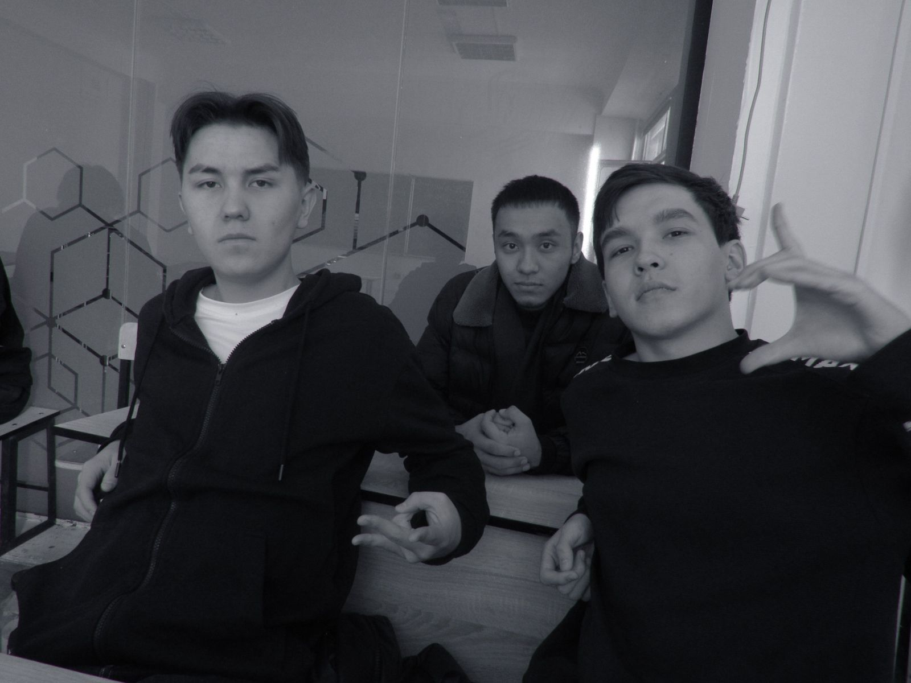
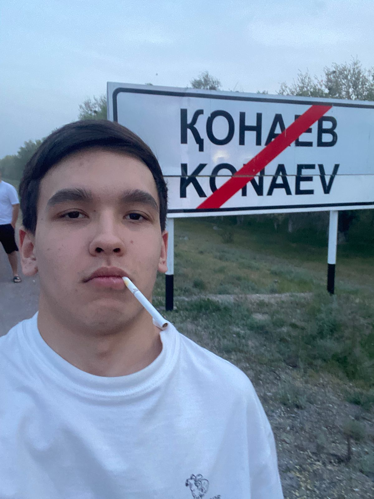
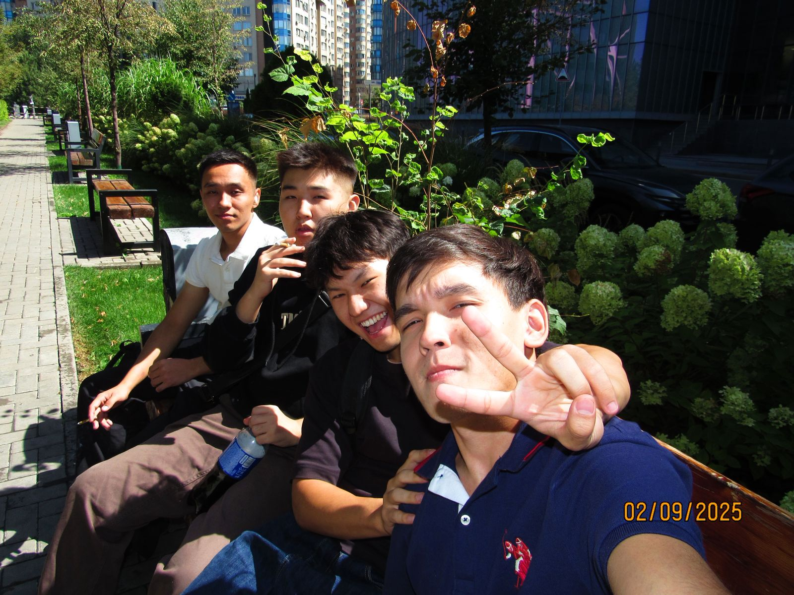
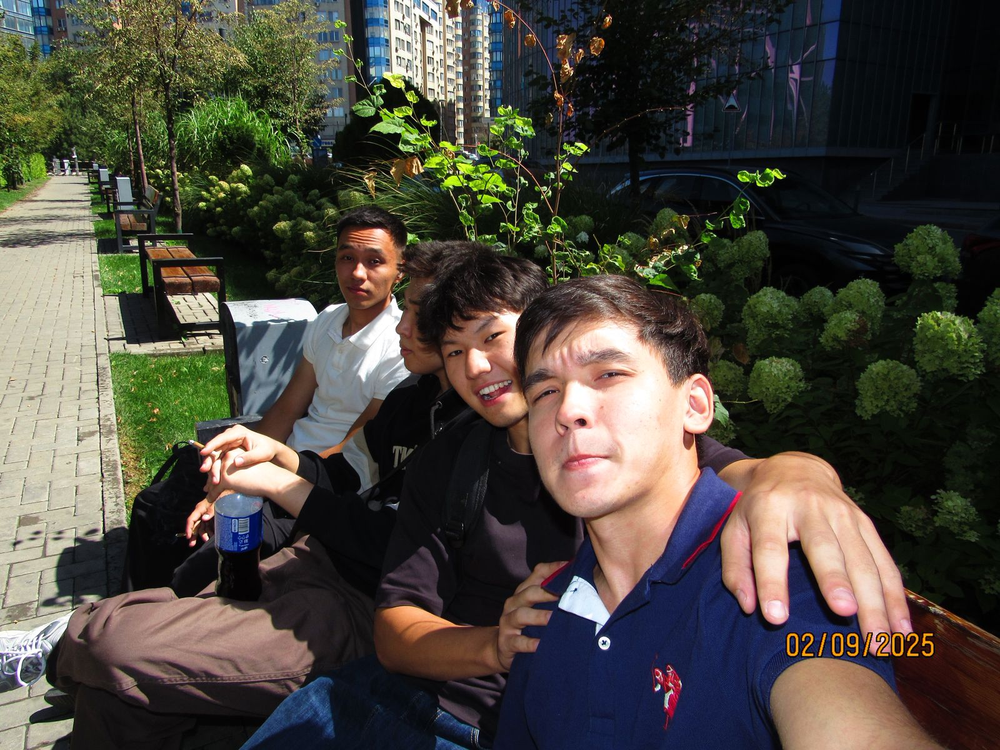
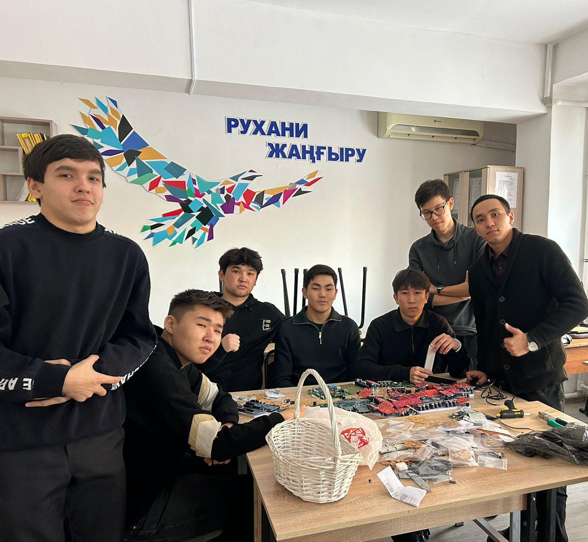

С Днём Рождения!
12 декабря 2005 — 20 лет 🎉
От Сунгата
- 1. Желаю, чтобы у тебя было бесконечное вдохновение для новых битов и мелодий.
- 2. Пусть каждая твоя идея превращается в хит, который цепляет с первого такта.
- 3. Желаю уверенности в себе и смелости экспериментировать со звучанием.
- 4. Пусть продакшн становится мощнее с каждым днем и приносит радость.
- 
- 5. Желаю тебе новых коллабораций с талантливыми музыкантами и продюсерами.
- 6. Пусть твои биты находят своих слушателей и получают признание.
- 7. Желаю лёгкости в создании аранжировок и идеальных драм-паттернов.
- 8. Пусть каждый трек приносит тебе новые возможности и предложения.
- 
- 9. Желаю здоровья и сил — чтобы хватало времени творить каждый день.
- 10. Пусть лайвы и стримы собирают полные залы и тёплые отзывы.
- 11. Желаю, чтобы оборудование всегда работало без сбоев и вдохновляло.
- 12. Пусть твоя музыкальная интуиция никогда не подводит.
- 
- 13. Желаю, чтобы каждая минута в студии приносила открытия и удовольствие.
- 14. Пусть твои биты звучат на вечеринках и в плейлистах тысяч людей.
- 15. Желаю новых ярких идей и неистощимого творческого азарта.
- 16. Пусть критика помогает расти, а похвала — мотивирует дальше.
- 
- 17. Желаю финансовой стабильности, чтобы ты мог вкладывать в своё звучание.
- 18. Пусть друзья и слушатели всегда поддерживают и вдохновляют тебя.
- 19. Желаю, чтобы каждая идея превращалась в качественный трек — как у тебя уже получается.
- 20. Пусть твои биты открывают двери — к успеху, признанию и крутым коллабам.
- 